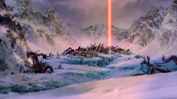
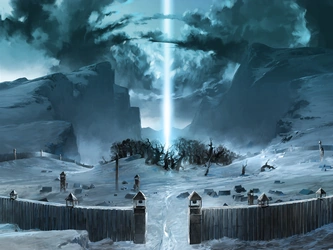

NORTH WATER TRIBE


The North Pole is the northernmost point on Earth and a site of great spiritual importance to the Northern Water Tribe. Located at the center of the pole is an ancient forest containing a portal to the Spirit World, which was reopened by Avatar Korra in 171 AG.
Millenia before the Hundred Year War, on the eve of Harmonic Convergence, Vaatu traveled to the North Pole in order to cross over to the Spirit World and battle Raava for the fate of the world. After the battle ended in Raava and Wan's favor, the latter sealed the portal, preventing any human from physically traveling to the Spirit World and freeing Vaatu.
During the lifetime of Avatar Roku, an outpost in the North Pole was besieged by dark spirits. Renegade warrior Kapena wanted to be the one to free the outpost and she sought help to be able to do it ahead of the warriors officially sent from the North and prove that women were just as capable of being warriors as men.
After abducting Aang from the Spirit Oasis during the Siege of the North in 100 AG, Zuko sought refuge in the tundras of the North Pole, where he was eventually found by a search party consisting of Katara, Sokka, Yue, and Appa. Following a short battle between Zuko and Katara, in which the latter swiftly defeated the firebender, the group left the tundra to aid in defending the Northern Water Tribe from Zhao and his forces.
Decades after the end of the Hundred Year War, Yakone frequently brought Noatak and Tarrlok deep into the arctic tundra, under the guise that they were going on hunting expeditions. In reality, he revealed his true identity as a crime lord from Republic City and forced his children to learn the art of bloodbending by practicing on wild fauna, including yaks and wolves.
Following the outbreak of the barbarian invasion in 151 AG, a small fighting force consisting of warriors and waterbenders led by General Tonraq launched a counterattack against the barbarians, overwhelming the invasion force and subsequently forcing them to retreat into the harsh tundras of the North Pole.
The marauders fled to the nearby spiritual forest per Unalaq's advice, under the belief that the warriors would not attack on sacred grounds. However, this was not the case, and the barbarians were swiftly defeated by Tonraq's men, who managed to subdue the invasion force with the use of waterbending. The confrontation resulted in the flooding of the spirit forest, and several spirits attacked the Northern Water Tribe in retaliation at the destruction of their home. The angered spirits were pacified by Unalaq, however, who guided them back into the forest.
Two years after the insurrection of the Red Lotus, a still emotionally scarred Korra traveled to the North Pole in order to enter the Spirit World and visit the Tree of Time via the northern portal.
A massive stretch of arctic tundra covers most of the North Pole. The inland tundra is mostly mountainous and inhabited by diverse fauna. The valleys of arctic mountain ranges also host small settlements, such as Yakone's village.
In contrast, the coastal arctic plains are highly treacherous. Only skilled arctic hunters travel on the open plains, but only stay for short periods of time. Heavy winter blizzards constantly pelt the tundra, and unstable ice sheets often give way under the slightest pressure. Even experienced waterbenders and warriors think twice before venturing into this environment.
An ancient forest containing a portal to the Spirit World is located in the center of the North Pole, which can be opened during the solstices by the Avatar. Although the portal remained sealed until 171 AG, strong spiritual energy in the North still prompted spirits to dance in the skies, causing the celestial phenomenon known as the northern lights. The spirit forest also remained completely thawed until 151 AG, providing a sharp contrast to the surrounding tundras, which remain largely intolerable even to locals acclimated to polar conditions.
The South Pole is the southernmost point on Earth and serves as the spiritual center of the Southern Water Tribe. Located at the center of the pole is an ancient forest containing a portal to the Spirit World, which was reopened by Avatar Korra during the winter solstice in 171 AG.
On the eve of Harmonic Convergence in 9,829 BG, Wan and Mula traveled to the South Pole together with Raava in order to cross over to the Spirit World and battle Vaatu for the fate of the world. After the battle ended in their favor, Wan oversaw the departure of all the spirits roaming the Spirit Wilds through this portal. After he said his goodbyes to the aye-aye spirit, whom he had befriended, he sealed the portal, preventing any human from physically traveling to the Spirit World and freeing Vaatu.
Despite relief efforts by the Northern Water Tribe to rebuild its sister tribe, the Southern Water Tribe underwent gradual spiritual decay in the years following the Hundred Year War, causing a spiritual imbalance in the South Pole. As a result, dark spirits began to rampage in the Everstorm and ceased to dance in the southern lights. In addition, the dormant spirit portal became encased in ice, along with the forest itself.
A small expedition consisting of Avatar Korra, Chief Unalaq, Tonraq, Mako, Bolin, Desna, and Eska visited the South Pole in 171 AG following the spirit attack during the Glacier Spirits Festival in an attempt to calm the angry spirits rampaging throughout the tribe. Although the group was attacked several times by hostile dark spirits, Korra managed to reopen the Southern spirit portal through the use of the Avatar State, restoring spiritual balance in the South. As a result of her actions, the Everstorm dissipated and the southern lights returned to the skies.
Following the outbreak of the Water Tribe Civil War, the forest located in the center of the South Pole was barricaded by Unalaq's forces in order to protect the spirit portal against the Southern Water Tribe rebels.
On the eve of Harmonic Convergence, Team Avatar, along with Bumi, Kya, and Tenzin, attempted to enter the Spirit World via the portal. Mako, Bolin, and Asami attempted to lay waste upon the encampment from a biplane to serve as a distraction, while Korra, Bumi, Kya, and Tenzin attempted to enter the Spirit World on Oogi. Despite causing significant damage to the encampment, they were ultimately defeated and captured, save for Bumi. Using a mecha tank, the retired United Forces commander inadvertently destroyed the entire encampment, freeing the others in the process and allowing them to enter the portal prior to Harmonic Convergence.
In an attempt to keep Unalaq from merging with Vaatu, Korra extradited the Water Tribe chief from the Spirit World through the portal and asked Mako and Bolin to keep him out. The brothers subsequently returned to the physical plane, where they defended the access to the portal. However, after a brief skirmish in the surrounding forest, Desna and Eska were able to overpower them and allow Unalaq to reenter the Spirit World through the portal. The bending brothers regained consciousness not long after and overpowered the twins, running into the Southern portal after Unalaq, with Desna and Eska following in their wake.
After failing to stop Unalaq from merging with Vaatu to become the Dark Avatar, Korra and Unalaq exited the Southern portal and continued their battle in the plains of the South Pole. It was there that Unalaq eventually managed to defeat Korra and destroy Raava, who was forcefully removed from Korra's body by Vaatu during the altercation. Mako and Bolin arrived shortly after to come to Korra's aid, but were quickly subdued by Unalaq. After defeating his opponents, Unalaq used his spiritual connection with Vaatu to grow to enormous proportions and touched the spirit lights to transport himself away from the South Pole.The three benders were later found by Bumi, Kya, and Tenzin, who carried them back to the Spirit World.
An ancient forest containing a portal to the Spirit World is located in the center of the South Pole, which can be opened during the solstices by the Avatar. In the past, when the spirits were in balance, a beam of light emanated from the portal, causing the celestial phenomenon known as the southern lights.
The damage wrought on the Southern Water Tribe by the Hundred Year War upset the pole's spiritual balance and caused the spirits to conjure an enormous, constant tempest known as the Everstorm, which surrounded the pole. This, in turn, led to the forest becoming encased in ice. The forest eventually turned into a series of glacial caverns, penetrated by roots and inhabited by small, dragon-like spirits.
Following the spirit portal's reopening, the southern lights returned to the skies and the glacial formations began to disappear. By the time of Unalaq's occupation, a large wall was constructed around the spirit forest, with watchtowers located at every junction. In addition, small tents were pitched directly outside the forest for use by the Northern troops.